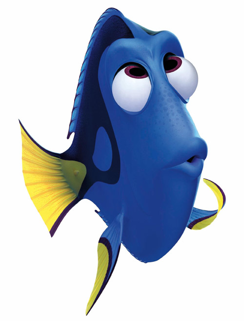

Yours Truly, Famous Inc.
Роман Парадеев, фронтендер, Яндекс
1 яблоко
5 яблок
2 515 123 яблока
let apple = Word(one: "яблоко",
some: "яблока",
many: "яблок")
morph(word: apple, forAmount: 1) // яблоко
morph(word: apple, forAmount: 2) // яблока
morph(word: apple, forAmount: 5) // яблокstruct Word { let one, some, many: String }
func morph(word: Word, forAmount amount: Int) -> String {
return word.many
}infix operator ≡
func ≡(this: String, that: String) -> UIColor {
return this == that ? .green : .red
}func morph(word: Word, forAmount amount: Int) -> String {
switch amount { case 1: return word.one
case 2...4: return word.one
default: return word.many }
}
morph(word: apple, forAmount: 1) ≡ "яблоко" // 🍏
morph(word: apple, forAmount: 2) ≡ "яблока" // 🍏
morph(word: apple, forAmount: 5) ≡ "яблок" // 🍏
@interface YABaseViewController : UIViewController
-(NSString *)errorTextFromError:(NSError *)error;
@end
// Отсутствует подключение к интернету.
- (NSString *)errorTextFromError:(NSError *)error {
NSString *errorDescriptionString = [[NSString alloc] init];
NSString* userInfo = [error.userInfo objectForKey:@"NSLocalizedRecoverySuggestion"];
if (userInfo) {
NSData* userData = [userInfo dataUsingEncoding:NSUTF8StringEncoding];
if (userData) {
NSError* parseError = nil;
NSDictionary* errorObject = (NSDictionary*)[RKNSJSONSerialization objectFromData:userData error:&parseError];
if (errorObject) {
NSDictionary* dictError = [errorObject objectForKey:@"data"];
if (dictError) {
NSDictionary *descriptionDict = [dictError objectForKey:@"description"];
if (descriptionDict && [[descriptionDict class] isSubclassOfClass:[NSDictionary class]]) {
NSArray *errorsDict = [descriptionDict objectForKey:@"errors"];
if (errorsDict) {
for (NSDictionary* dict in errorsDict) {
NSArray *errorArray = [dict objectForKey:@"error"];
if (errorArray) {
NSMutableString *mutableString = [[NSMutableString alloc] init];
if ([errorArray count] > 0 && [errorArray[0] isEqualToString:@"flights"]) {import XCTest
class YaAviaTests: XCTestCase {
func testExample() {
XCTAssert(2 + 2 == 4)
XCTAssert(2 + 2 == 5)
}
}
@testable import YaAvia
class YaAviaTests: XCTestCase {
func testDefaultError() {
let vc = YaAviaBaseController()
}
}func testDefaultError() {
let vc = YaAviaBaseController()
let actual = vs.errorText(fromError: NSError())
let expected = "Нет соединения с интернетом."
XCTAssertEqual(expected, actual)
}In computer science, code coverage is a measure used to describe the degree to which the source code of a program is tested by a particular test suite.
A program with high code coverage has been more thoroughly tested and has a lower chance of containing software bugs than a program with low code coverage.
extension NSError {
var localizedString: String {
...
}
}
let error = NSError()
error.localizedString
#import "YaAvia-Swift.h"
@implementation YABaseViewController
- (NSString *)errorTextFromError:(NSError *)error {
return error.localizedString;
}
@end
extension NSError {
var localizedString: String {
guard let responseData = self.userInfo["NSLocalizedRecoverySuggestion"] as? Data else {
return ls("txt_error_connection_failed")
}
guard let json = try? JSONSerialization.jsonObject(with: responseData, options: []),
let description = ErrorDescription(json: json) else {
return ls("txt_error_connection_server_problem")
}
switch description {
case .UnknownFlightNumber: return ls("add_flight_unknown_flight_number")
case .IncorrectFlightNumber: return ls("add_flight_incorrect_flight_number")
case .ServerManaged(let reasons): return reasons.joined(separator: " ")
}
}
}Roman Paradeev
@sameoldmadness
